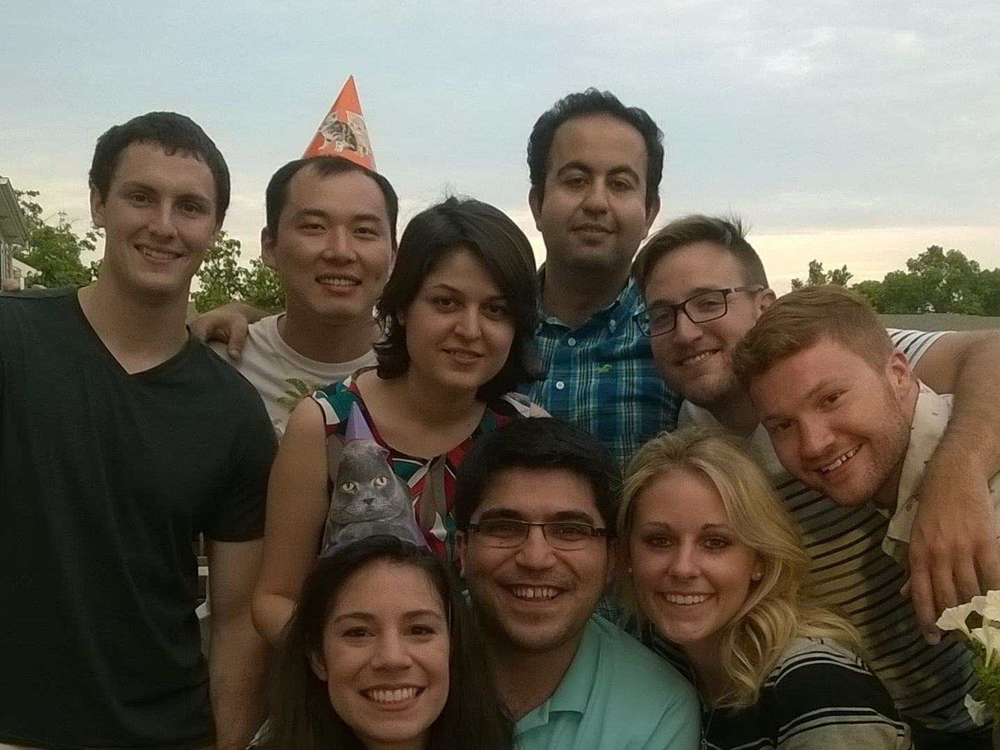

We have had many blessings in our lives, and some of those biggest blessings have been the wonderful friendships that we have developed. The greatest gift we could ask for on this wonderful day is that all of our friends can be here to share in the experience with us as we commit ourselves to each other for the rest of our lives. In many cases, asking this represents a significant burden, both in terms of money and time. Recognizing this, we are asking for no gifts. Instead, we hope that you can make it to Corvallis for our ceremony. For those that cannot make it, and feel compelled to send something, we are asking that you make a donation to charity in the name of Luisa and Robert Spragg. We suggest The Newman Center at OSU, which has been our spiritual home while we have been in Oregon and provided us a chance to deepen our spiritual lives, or Amigos de TECHO, where your money can help young people overcome poverty and seclusion in communities throughout Latin America and the Caribbean.
